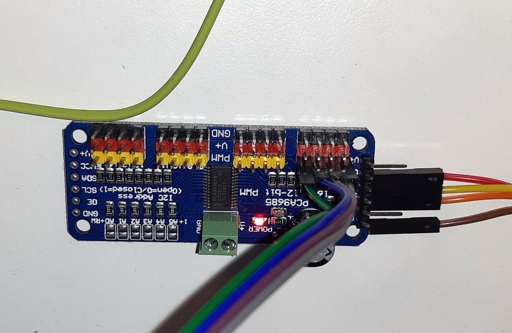
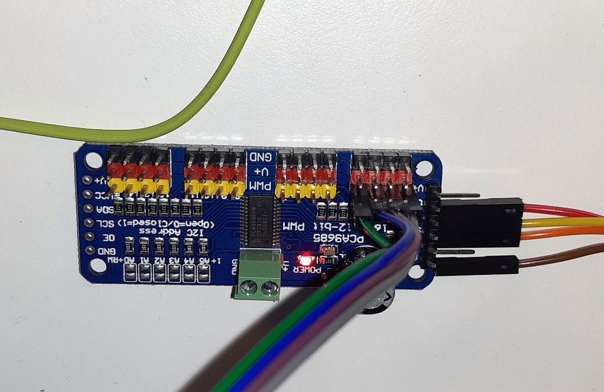

Arduino (ATMega328p) boards can be used to control multiple LEDs. To simplify the management of the pulse width modulation and use only a couple of arduino's pins for many LEDs I used PCA9685 controller.
PCA9685 is connected to Arduino using I2C interface that requires only two data pins.


 

Arduino connects …
more ...